The 1.1 series and the hopefully soon to arrive 1.2 series have a nice new feature I refer to as gradient brushes. Essentially, this is just the regular paint tool, but instead of painting with a constant color, it gets its color from a gradient and rotates thought the gradient as you paint.
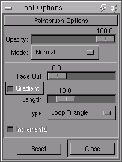
Gradient brushes can be accessed from the standard paintbrush dialog. Just press the lovely "gradient" button, and start painting. The colors will be drawn from the current active gradient (it defaults to "german flag smooth" for most installs...)
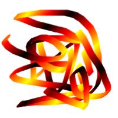 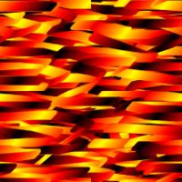 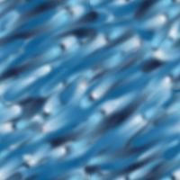
Just filling in an image with a gradient brush is a good start for interesting textures, and you can make some nice ones that way.
But that gets a little boring after a while. To really spice thigns up a bit, you need some more interesting brushes. So called "grunge brushes" work quite well for this use. A very nice set can be found in the June 1999 edition of thegimp.com, in the brushes section. Get these for real fun with gradient brushes.
Basically, just select one of those brushes, and se the spacing to something reasonable (most default to 10 or so). I would suggest setting the spacing to about 80-120 or so. Of course, please experiment.
For example, lets choose the "Grunge 15" brush. Set its spacing to about 70 or so. Now choose a gradient from the the gradient selector (<Image>Dialogs->Gradients). Just about any of them will do fine. Pick one at random, you can get nice results from any of them. For this particular example, I used "Caribbean_Blues".
Now for the easy part. Draw random stuff on the image. Or not random. It doesnt really matter. If you want to stick to a very set pattern, your texture might look a bit more orderly. Fill the image completely if you dont want alpha poking though. Nice eh?
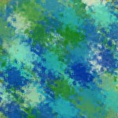
The hard part is making the image tilable. The easiest way to do this is to offset your image by half its height, and half its width. Select <Image>Filters->Map->Make Seamless. Then choose the convient "x/2, y/2" option, and hit OK. Your image will now show what used to be at its edges at the center of the image. The secret to making tileable images is to make this transisiton smooth.
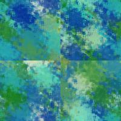 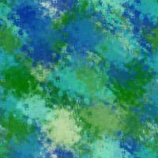
For gradient painting with grunge brushes, this typicaly just means painting along those lines. You probabaly want to give it a bit of character so it looks more natural. You will probabaly want to avoid painting at the edges of the image when you do this. But if you do, just repeat the above steps again and you should be fine.

Offset that image one more time (or not,actually...), and your ready to go.
Of course changing the gradient type, and the brush will have a big effect on the look of the texture, but so will more subtle things like
the opacity of the brush, and the paint mode can make for some interesting effects. These type of textures also seem to work well for layering
two or three textures together with different layer modes.
All in all, this is nice and simple, and fast way to create some colorful textures.
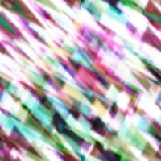 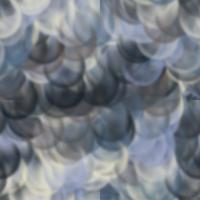 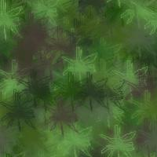 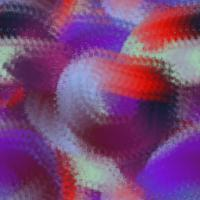
Just some examples whipped up in a few minutes. Click on the image to see a page with the image tiled as a background.
The original tutorial can be found here.